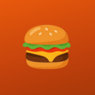

Fadori
.
—
Sonando en el recreo
RADIO DIVERGENTES
EN EL RECREO
Radio Divergentes
¡Ya está tu pedido!
Empezar la transmisión
Con sonido, pantalla completa y sin que se apague
Toca una vez para que se oigan los turnos
Volver a la pantalla
La pantalla de turnos